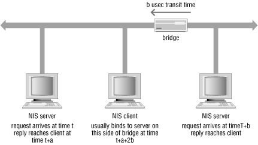

Although partitioning is a solution to many network problems,
it's not entirely transparent. When you partition a network,
you must think about the effect of partitioning on NIS, and the
locations of diskless nodes and their boot servers.
17.4.1. NIS in a partitioned network
NIS is a point-to-point protocol once a
server binding has been established.
However, when
ypbind searches for a server, it
broadcasts an RPC request. Switches and bridges do not affect
ypbind, because switches and bridges forward
broadcast packets to the other
physical network.
Routers don't forward broadcast packets to other IP networks,
so you must make configuration exceptions if you have NIS clients but
no NIS server on one side of a router.
It is not uncommon to attach multiple clients to a hub, and multiple
hubs to a switch. Each switch branch acts as its own segment in the
same way that bridges create separate "collision
domains." Unequal distribution of NIS servers on opposite sides
of a switch branch (or bridge) can lead to server victimization. The
typical bridge adds a small delay to the transit time of each packet,
so
ypbind requests will almost always be
answered by a server on the client's side of the switch branch
or bridge. The relative delays in NIS server response time are shown
in
Figure 17-2.

Figure 17-2. Bridge effects on NIS
If there is only one server on bridge network A, but several on
bridge network B, then the "A" network server handles all
NIS requests on its network segment until it becomes so heavily
loaded that servers on the "B" network reply to
ypbind faster, including the bridge-related
packet delay. An equitable distribution of NIS servers across switch
branch (or bridge) boundaries eliminates this excessive loading
problem.
Routers and gateways present
a
more serious problem for NIS. NIS
servers and clients must be on the same IP network because a router
or gateway will not forward the client's
ypbind broadcast outside the local IP network.
If there are no NIS servers on the "inside" of a router,
use
ypinit at configuration time as discussed
in
Section 13.4.4, "Setting initial client bindings".
17.4.2. Effects on diskless nodes
Diskless nodes should be kept
on the same logical network as their servers
unless tight constraints require their separation. If a router is
placed between a diskless client and its server, every disk operation
on the client, including swap device operations, has to go through
the router. The volume of traffic generated by a diskless client is
usually much larger -- sometimes twice as much -- than that
of an NFS client getting user files from a server, so it greatly
reduces the load on the router if clients and servers are kept on the
same side of the router.
[53]
Booting a client through a router is less than ideal, since the
diskless client's root and swap partition traffic unnecessarily
load the packet forwarding bandwidth of the router. However, if
necessary, a diskless client can be
booted through a router as
follows:
- Some machine on the client's local network must be able to
answer Reverse ARP (RARP) requests from the machine. This can be
accomplished by publishing an ARP entry for the client and running
in.rarpd on some host on the same network:
in.rarpd hme 0
In Solaris, in.rarpd takes the network device
name and the instance number as arguments. In this example we start
in.rarpd on /dev/hme0, the
network interface attached to the diskless client's network.
in.rarpd uses the ethers,
hosts, and ipnodes
databases[54] to
map the requested Ethernet address into the corresponding IP address.
The IP address is then returned to the diskless client in a RARP
reply message. The diskless client must be listed in both databases
for in.rarpd to locate its IP address.
- A host on the local network must be able to tftp
the boot code to the client, so that it can start the boot sequence.
This usually involves adding client information to
/tftpboot on another diskless client server on
the local network.
- Once the client has loaded the boot code, it looks for boot parameters. Some server on the client's network must be able to
answer the bootparams request for the client.
This entails adding the client's root and swap partition
information to the local bootparams file or NIS
map. The machine that supplies the bootparam
information may not have anything to do with actually booting the
system, but it must give the diskless client enough information for
it to reach its root and swap filesystem servers through IP routing.
Therefore, if the proxy bootparam server has a
default route defined, that route must point to the network with the
client's NFS server on it.
- If the NIS server is located across the router, the diskless client
will need to be configured at installation time, or later on with the
use of the ypinit command, in order to boot from
the explicit NIS server. This is necessary because
ypbind will be unable to find an NIS server in
its subnetwork through a broadcast.